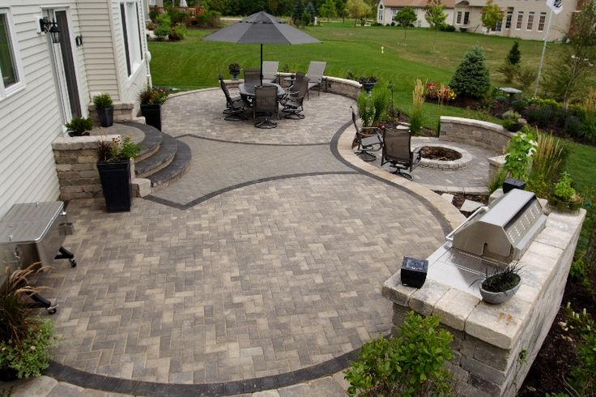

Key Takeaways
- Pavers are the most forgiving choice for freeze-thaw climates because individual units can flex and be re-set or replaced.
- Natural stone (bluestone, flagstone, granite) gives the most upscale, one-of-a-kind look and lasts for decades, but needs a skilled installer.
- Poured concrete is the most budget-friendly and quickest option, but it can crack and is harder to repair invisibly.
- In every case, a properly compacted base and correct drainage slope decide how long the patio stays level.
A patio is one of the best ways to add usable living space to a home. It is also one of the projects homeowners most often regret choosing the wrong material for. If you are planning a patio in Brewster, Putnam County or nearby towns in Fairfield and Westchester counties, the choice comes down to how the surface handles harsh winters, how much upkeep you want, and the look you are after.
Below is a plain-language comparison of the three most common patio options, based on what holds up on real properties in our region.
The three main patio materials
Concrete pavers
Pavers are manufactured interlocking units set over a compacted stone base and locked together with joint sand and an edge restraint. They come in many colors, textures and patterns, which makes them popular for curved layouts, borders and fire-pit areas. Because the surface is made of many small pieces, it can move slightly with the ground instead of cracking. If one paver stains or settles, it can be lifted and replaced without tearing out the whole patio. See our patio installation service for layouts we build.
Natural stone
Bluestone, flagstone, limestone and granite are the classic choices across the Northeast. Stone can be laid dry over a compacted base or set in mortar over a concrete slab for a more formal finish. Every piece is different, so the result is unique, and a well-built stone patio can last for generations. It is also the most labor-intensive to install, so the craftsmanship of the installer shows. Our stonework team handles cutting, fitting and finishing.
Poured concrete
A poured slab is the fastest and usually the most economical way to get a flat, durable surface. Finishes can be broomed for traction, stamped to mimic stone, or colored. The trade-off is that concrete is rigid: when the ground underneath heaves or settles, a slab tends to crack rather than flex. Proper control joints, a good base and air-entrained concrete mix (designed for freeze-thaw exposure) help considerably. More on this in our concrete work page.

Side-by-side comparison
| Factor | Pavers | Natural stone | Poured concrete |
|---|---|---|---|
| Freeze-thaw performance | Very good; flexible, repairable | Very good when set on a proper base | Good with air-entrained mix and control joints; prone to cracking |
| Upfront cost | Mid-range | Highest | Lowest |
| Repairs | Easy; replace individual units | Moderate; individual stones can be re-set | Harder; patches rarely match |
| Design flexibility | High; many shapes and patterns | High; natural, irregular beauty | Moderate; stamped or colored options |
| Routine upkeep | Re-sand joints, occasional sealing | Occasional sealing and cleaning | Sealing every few years |
| Typical lifespan | Decades with a good base | Decades; often the longest-lasting | Decades, though cracks are common |
What matters most in our climate
Our region goes through many freeze-thaw cycles each winter. Water gets into small gaps, freezes and expands by roughly nine percent, then thaws and leaves the surface a little looser than before. Over several seasons, that cycle is what lifts pavers, cracks slabs and flakes weak concrete.
- Choose materials rated for freeze-thaw. Not every paver or stone sold at big-box stores is suited to cold climates. A contractor who works locally knows which products hold up.
- Plan for drainage. A patio should slope gently away from the house, typically about 1/8 to 1/4 inch per foot, so water never pools against the foundation or sits on the surface.
- Go easy on de-icing salt. Rock salt can damage concrete and some stone. Sand or a calcium magnesium acetate product is gentler, and new concrete should not see salt in its first winter.
The base matters more than the surface
When a patio sinks, tilts or develops dips, the surface material is rarely the real cause. The problem is almost always what is underneath. A durable patio starts with excavating to the right depth, removing soft or organic soil, and building up layers of compacted crushed stone. Patios typically need around six inches of compacted base or more, and areas that carry vehicles need deeper, with the exact figure depending on your soil.


How to choose
- Want the best balance of cost, looks and repairability? Pavers are the safest all-around choice for most homes.
- Want a high-end, natural look that ages beautifully? Natural stone is worth the investment.
- Working with a tight budget or a simple rectangular space? A well-built concrete slab can serve you well.
- Planning seating walls, steps, a fire pit or an outdoor kitchen? Pavers and stone combine with these features naturally. Many projects combine more than one material.
If you are in Greenwich, New Canaan, Ridgefield, Bedford, Scarsdale or another town we serve, we are happy to look at your property, explain what suits the site and give you a free written estimate. You can also browse our service areas.
Frequently asked questions
Which patio material lasts the longest?
Natural stone and well-installed pavers both routinely last for decades. In practice the installation quality, base preparation and drainage affect lifespan more than the material itself.
Do pavers crack in winter like concrete?
Individual pavers can chip, but the system as a whole is flexible. Because the units are not rigidly connected, the surface can move slightly with the ground, and any damaged paver can be replaced.
How long does patio installation take?
It depends on size and complexity. Excavation, base work and layout take most of the time. A simple patio may take a few days, while larger patios with walls, steps or fire features take longer. We give you a timeline with your estimate.
Can I add a fire pit or seating wall later?
Yes, but it is easier and more cost-effective to plan them in the original design so footings and layout line up. We can advise on options for existing patios as well.
Do you offer free estimates for patios?
Yes. Ironstone Masonry provides free, no-obligation estimates for patios and other masonry and outdoor construction in Brewster, NY and nearby Connecticut and New York communities.
Planning a Project? Get a Free Estimate
Ironstone Masonry has 15+ years of experience building and repairing patios, walkways, retaining walls, stonework and concrete in Brewster, NY and nearby Connecticut and New York towns.
Call (860) 882-7921 Request a Quote